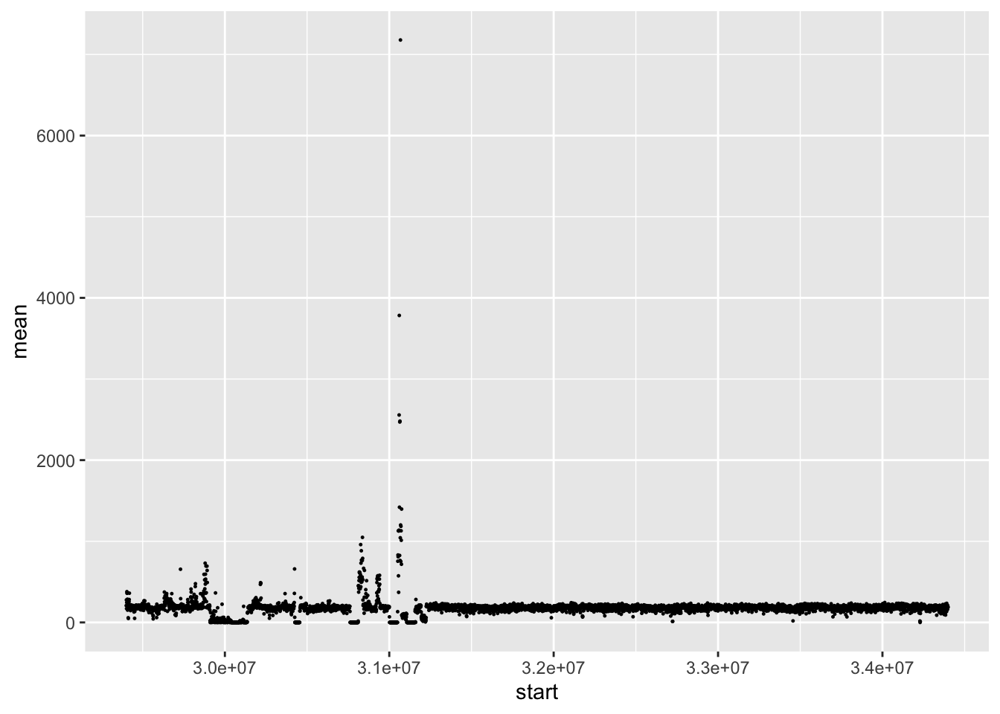

library(tidyverse)3 Variant calling - First Steps
3.1 Learning Objectives
| Learning Objectives: |
| Conduct quality control analysis of raw and mapped data specific to variant detection. |
In this chapter, we’re going to introduce a basic outline of a variant detection workflow, and then work through the initial QC and mapping stages of the analysis. In the following chapters we’ll cover actually calling variants and genotyping, filtering variants and evaluating quality, comparing variant call sets, and functional annotation.
3.2 The basic workflow
Our workflow is going to be focused on calling short variants (SNPs/indels) for multiple samples against a single linear reference genome using short-read data. We’re not going to cover multiple whole genome alignment pan-genome graphs, or structural variant detection here, though those are really fun and interesting topics in bioinformatics.
A typical reference-based variant detection workflow consists of the following steps:
- Organizing your data resources and setting up your project structure (always the first step!).
- Doing basic QC on your input sequence data (and perhaps also your reference genome).
- Indexing your reference genome and aligning your sequence data to it.
- Doing QC on the alignments.
- Calling variants and genotyping.
- Filtering and evaluating the variant callset.
In this module, we will additionally look at ways to compare multiple variant callsets and functionally annotate them given a structural annotation of the genome.
3.3 Our example data
For this module, we’re going to use data from the Genome-in-a-Bottle project which is created and housed in the US National Institute of Standards and Technology, a part of the Department of Commerce. NIST is devoted to the science of measurement and the development and use of standards. The GIAB data is created as part of an initiative to create benchmarking data to test methods of measuring genetic variation in humans.
GIAB has a set of human samples they subject to every sequencing technology imaginable. They publish the data, along with products such as alignments and variant call sets for others to use. We’re going to use one set of three samples, a trio (mother, father, son) of Ashkenazi ancestry. For each sample, we’re going to download Illumina 2x250bp paired end sequence at about 50x coverage. In our scripts in this chapter, to make things run quickly, we’re going to cut the dataset down to look at only 5mb of chromosome 20. To make the QC steps interesting, this region overlaps a bit of messy sequence adjacent to the centromere.
Links to the data (and all the other sequencing data for these and other GIAB samples) can be found here.
3.4 Getting set up
Assuming you’re working on UConn’s Xanadu (or Mantis) cluster, you should clone this github repository. It contains all the scripts that will be covered here. Each of them can be run in sequence to reproduce the results you’ll see in this chapter. Please follow along, submitting them as you go. In the exercises for this module, you will be asked to modify and re-run the scripts and answer questions about what you find.
git clone git@github.com:isg-certificate/variants.gitYou’ll see initially that there is only a README.md file and a scripts directory containing scripts for the analysis. The scripts will build up more subdirectories as we go.
3.5 Getting the data
In the directory scripts/01_downloadData we have two scripts for downloading data. cd there now.
3.5.1 The read data
Let’s look at 01_getSequences.sh.
To make these examples run quickly, we’re going to grab only a subset of data from a small region of the genome. As you know at this point, fastq files straight off the sequencer are not ordered with respect to location in the genome, so doing this with truly raw data would be a challenge. GIAB provides genome-aligned BAM files, however, so we can do this relatively easily.
Load up our software modules:
module load samtools/1.12
module load bedtools/2.29.0We worked with samtools in ISG5311, so we won’t cover it again here. bedtools is new however. It’s a toolkit that allows the creation and manipulation of data in genomic windows. We’re going to elide the details in this section and cover it more depth shortly.
To grab the data (for one sample):
SON='https://ftp-trace.ncbi.nlm.nih.gov/ReferenceSamples/giab/data/AshkenazimTrio/HG002_NA24385_son/NIST_Illumina_2x250bps/novoalign_bams/HG002.GRCh38.2x250.bam'
samtools view -uh $SON chr20:29400000-34400000 | \
samtools sort -n - | \
bedtools bamtofastq -i /dev/stdin/ -fq $OUTDIR/son.1.fq -fq2 $OUTDIR/son.2.fqWe first set a variable pointing to the bam file for the son. Then we use samtools to extract region chr20:29400000-34400000 directly from the file on the server. This is a pretty nice feature of samtools. As along as the .bai index is also on the server, this approach will work great.
Next we pipe the data to samtools sort -n to sort the reads by name instead of position.
Finally, we’re sending the name-sorted output to bedtools bamtofastq, which will split the paired-end reads into separate files, reconstituting something like our raw data file, with a bunch of caveats. We could equally well have used samtools fastq to accomplish this.
We do this for all three samples (we could have done it in parallel, or used an array job as well). The last step of the script gzip compresses all the fastq files. So if we check out output directory:
$ ll ../../data/
total 765M
-rw-r--r-- 1 nreid cbc 114M Feb 2 10:56 dad.1.fq.gz
-rw-r--r-- 1 nreid cbc 125M Feb 2 10:56 dad.2.fq.gz
-rw-r--r-- 1 nreid cbc 123M Feb 2 10:55 mom.1.fq.gz
-rw-r--r-- 1 nreid cbc 134M Feb 2 10:55 mom.2.fq.gz
-rw-r--r-- 1 nreid cbc 131M Feb 2 10:53 son.1.fq.gz
-rw-r--r-- 1 nreid cbc 141M Feb 2 10:53 son.2.fq.gzYou should always check the .err. and .out files to make sure you script ran successfully. In this case you’re going to see a lot of warnings produced by bedtools that look like this:
*****WARNING: Query D00360:94:H2YT5BCXX:1:1102:3248:71588 is marked as paired, but its mate does not occur next to it in your BAM file. Skipping. Can you guess why these warnings occur?
3.5.2 The reference genome
Now let’s look at 02_getGenome.sh. This is very straightforward:
# this is modified version of GRCh38 that corrects some errors. GIAB uses this for their benchmarking work.
# "with masked false duplications and contaminations, as well as decoy sequences from CHM13, which we are now using for GIAB analyses"
# https://genomebiology.biomedcentral.com/articles/10.1186/s13059-023-02863-7
wget https://ftp-trace.ncbi.nlm.nih.gov/ReferenceSamples/giab/release/references/GRCh38/GRCh38_GIABv3_no_alt_analysis_set_maskedGRC_decoys_MAP2K3_KMT2C_KCNJ18.fasta.gz
gunzip *gzThe human genome is 3.1 gigabases. That’s decently large (though it’s no axolotl). You could run something like QUAST on it to get some basic stats. When it’s your first time working with a given genome, it’s good to get to know it a bit. We won’t do that here though, we’ll cover evaluating genome quality in the next module.
There are lots of human reference genome versions out there. GRCh38 was the state of the art until the telomere-to-telomere (CHM13) genome was released. Within GRCh38 there are multiple versions as well. We’re using GRCh38, and this very particular version, because GIAB has made some corrections to it (they do not alter the coordinate system, so GRCh38 annotations should work fine with it) and because it’s the one they use in their analyses. T2T is more complete and correct, however. Problems with a multiplicity of confusing genome versions are typically only a problem in model systems, and most of all in human.
3.6 Initial QC
We’ve finished downloading our data, so let’s move to the directory scripts/02_qc.
3.6.1 fastqc/multiqc on raw data
We have seen fastqc and multiqc used with RNA-seq data, so we won’t belabor this. But we’re going to run them on all our fastq files. Look at the script 01_fastqcRaw.sh:
# run fastqc. "*fq" tells it to run on the illumina fastq files in directory "data/"
fastqc -t 6 -o $OUTDIR ../../data/*1.fq.gz
fastqc -t 6 -o $OUTDIR ../../data/*2.fq.gz
# run on fastqc output
multiqc -f -o $OUTDIR/multiqc $OUTDIRCheck your outputs! There are some notable things here:
- The sequence quality drops considerably at the end of these 250bp PE reads. It’s normal for sequence quality to drop. We’re going to trim a bit so it will increase.
- We have a super-weird per-sequence GC content distribution! The bimodal shape is because we have deliberately pulled down reads from a region that is part run-of-the-mill genome sequence, and part really messy sequence next to the centromere. These two subregions of our 5mb window apparently have substantially different GC content.
- We have a little bit of adapter contamination. It’s not so much that you would be super worried, but we’re going to trim it out anyway.
3.6.2 Trimmomatic
We’ve seen Trimmomatic before, but here’s the call, from a SLURM array script 02_trimmomatic.sh:
# adapters to trim out
ADAPTERS=/isg/shared/apps/Trimmomatic/0.39/adapters/TruSeq3-PE-2.fa
# sample bash array
SAMPLELIST=(son mom dad)
# run trimmomatic
SAMPLE=${SAMPLELIST[$SLURM_ARRAY_TASK_ID]}
java -jar $Trimmomatic PE -threads 4 \
${INDIR}/${SAMPLE}.1.fq.gz \
${INDIR}/${SAMPLE}.2.fq.gz \
${TRIMDIR}/${SAMPLE}_trim.1.fq.gz ${TRIMDIR}/${SAMPLE}_trim_orphans.1.fq.gz \
${TRIMDIR}/${SAMPLE}_trim.2.fq.gz ${TRIMDIR}/${SAMPLE}_trim_orphans.2.fq.gz \
ILLUMINACLIP:"${ADAPTERS}":2:30:10 \
SLIDINGWINDOW:4:15 MINLEN:45Should be pretty standard at this point. In the .err files we should see trimming didn’t have a huge impact, e.g.:
Input Read Pairs: 719326 Both Surviving: 708775 (98.53%) Forward Only Surviving: 9828 (1.37%) Reverse Only Surviving: 692 (0.10%) Dropped: 31 (0.00%)If we look at our output directory:
ll ../../results/02_qc/trimmed_fastq/
total 706M
-rw-r--r-- 1 nreid cbc 108M Feb 2 11:19 dad_trim.1.fq.gz
-rw-r--r-- 1 nreid cbc 111M Feb 2 11:19 dad_trim.2.fq.gz
-rw-r--r-- 1 nreid cbc 1.3M Feb 2 11:19 dad_trim_orphans.1.fq.gz
-rw-r--r-- 1 nreid cbc 117K Feb 2 11:19 dad_trim_orphans.2.fq.gz
-rw-r--r-- 1 nreid cbc 116M Feb 2 11:20 mom_trim.1.fq.gz
-rw-r--r-- 1 nreid cbc 120M Feb 2 11:20 mom_trim.2.fq.gz
-rw-r--r-- 1 nreid cbc 1.5M Feb 2 11:20 mom_trim_orphans.1.fq.gz
-rw-r--r-- 1 nreid cbc 122K Feb 2 11:20 mom_trim_orphans.2.fq.gz
-rw-r--r-- 1 nreid cbc 123M Feb 2 11:20 son_trim.1.fq.gz
-rw-r--r-- 1 nreid cbc 126M Feb 2 11:20 son_trim.2.fq.gz
-rw-r--r-- 1 nreid cbc 1.5M Feb 2 11:20 son_trim_orphans.1.fq.gz
-rw-r--r-- 1 nreid cbc 131K Feb 2 11:20 son_trim_orphans.2.fq.gzNote that trimmomatic does produce “orphans” files with singletons whose mate pairs did not survive trimming. We’re going to ignore those going forward.
3.6.3 fastqc/multiqc on trimmed data
The script 03_fastqcTrimmed.sh is essentially the same as above, but pointed at the trimmmed fastq files. We see improved overall sequence quality, and our minor residual adapter contamination is gone. We still very much have the bimodal GC distribution though!
3.7 Alignment
In ISG5311 we used a spliced aligner, HISAT2 to align our RNA-seq reads to a reference genome. Here we’re going to use bwa-mem2, an extremely popular alignment program for aligning DNA. It is perfectly happy to do “split-read” alignments, where chunks of a read are aligned non-contiguously. These are in principle quite similar to spliced alignments, but instead of having a large splice in the CIGAR string of the SAM record (e.g. 21M1552N80M with 552N indicating a 552bp intron), if bwa-mem2 determines a read should be split-aligned, it will output multiple alignment records, one for each aligned chunk. The first will be the primary alignment, and the rest will be flagged as secondary in the FLAG column of the SAM file.
Our alignment scripts are located in scripts/03_Alignment. cd over there right now.
3.7.1 Indexing
As always, when using a short-read aligner, the first step is to index the reference genome. We do this with the script 01_bwaIndex.sh. It’s very straightforward:
bwa-mem2 index \
-p $INDEXDIR/GRCh38 \
$GENOMEWe assign a prefix GRCh38 to be used for our index files, and that’s what we use to invoke the index later. The index files can be found in the results directory:
$ ll ../../results/03_Alignment/bwa_index/
total 16G
-rw-r--r-- 1 nreid cbc 5.8G Feb 2 11:46 GRCh38.0123
-rw-r--r-- 1 nreid cbc 18K Feb 2 11:44 GRCh38.amb
-rw-r--r-- 1 nreid cbc 9.9K Feb 2 11:44 GRCh38.ann
-rw-r--r-- 1 nreid cbc 9.4G Feb 2 12:34 GRCh38.bwt.2bit.64
-rw-r--r-- 1 nreid cbc 740M Feb 2 11:44 GRCh38.pacNote that indexing can use significant amounts of memory (depending on the size of the genome) and take some time. For this job the SLURM seff output looks like this:
Job ID: 8839080
Cluster: xanadu
User/Group: nreid/cbc
State: COMPLETED (exit code 0)
Nodes: 1
Cores per node: 8
CPU Utilized: 00:50:12
CPU Efficiency: 12.45% of 06:43:12 core-walltime
Job Wall-clock time: 00:50:24
Memory Utilized: 69.31 GB
Memory Efficiency: 86.64% of 80.00 GBSo this human genome required around 70G of memory and 50 minutes to run. In the script it was allowed 8 cpus, but only used one of them, and apparently has no options to specify number of cpus/threads. So we over-requested resources on this. Not a big in this case.
3.7.2 Alignment
Now that we’ve got our data all QC’ed and our genome indexed, we’re ready to align. At this stage the workflow starts to diverge a little bit more from the RNA-seq of last semester. We have a couple new points to cover here.
Let’s look at our script 02_bwaAlign.sh. It is another array script.
3.7.2.1 Read group ID
The beginning is pretty standard stuff. The first weird thing we notice is the creation of the variable RG.
# sample ID list
SAMPLELIST=(son dad mom)
# extract one sample ID
SAMPLE=${SAMPLELIST[$SLURM_ARRAY_TASK_ID]}
# create read group string
RG=$(echo \@RG\\tID:$SAMPLE\\tSM:$SAMPLE)In that line we populate the variable with, for the son, @RG\tID:son\tSM:son. This will ultimately be parsed as @RG ID:son SM:son.
We’re going to provide one of these strings to our aligner for each sample. It’s known as the read group string. This allows every read in a file to be tagged with some metadata. Different groups of reads can be kept in the same SAM/BAM file and keep a distinguishing identifier. There are a few bits of metadata that can be attached, most importantly for our use-case here is the sample tag SM, which is son in this case.
Read group IDs must be attached for variant callers to correctly process the reads downstream. If you fail to attach them during the alignment step, you can add them later (e.g. using PICARD), but you’ll create a whole new BAM file and have to delete the old one. Very inefficient.
The line @RG ID:son SM:son will be added the the SAM header, and then for each alignment record (line in the SAM/BAM file), a tag is added: RG:Z:son. The ID tag is a short identifier for the whole read group.
3.7.2.2 The alignment pipe
Now we arrive at the actual alignment, which should be mostly familiar:
bwa-mem2 mem -t 7 -R ${RG} ${INDEX} ${SAMPDIR}/${SAMPLE}_trim.1.fq.gz $SAMPDIR/${SAMPLE}_trim.2.fq.gz | \
samblaster | \
samtools view -S -h -u - | \
samtools sort -T ${OUTDIR}/${SAMPLE}.temp -O BAM >$OUTDIR/${SAMPLE}.bam We provide our reads, the index, the read group string and sort and compress the output, just as we did with RNA-seq reads.
3.7.2.3 Marking duplicates
There is one new step in there: samblaster. We are using this program to mark duplicate read pairs. In variant calling (and many other applications) we want to assume that each fragment of sequenced DNA derives from an independent original biological molecule. When we sequence reads covering a heterozygous site, our variant calling model assumes the alleles are sampled in proportion to their true frequency in the pool of DNA extracted from the organism.
Many library preparation protocols, however, involve the use of the polymerase chain reaction, which creates copies of molecules. These copies can distort the apparent frequencies of alleles. It’s also possible for there to be “optical” duplicates, which are artifacts of the sequencer, not the library preparation.
samblaster identifies putative duplicates and marks them in the FLAG column of their SAM records. Downstream tools will (typically by default) ignore these duplicate reads.
Read pairs are identified as duplicates when both members of the pair share the same alignment as another pair.
3.7.3 Alignment indexing
Finally, we’re going to align the sorted, compressed BAM file:
samtools index ${OUTDIR}/${SAMPLE}.bamThis index allows fast access to reads from any part of the reference genome.
And Finally we’ve got this in our results directory:
ll ../../results/03_Alignment/bwa_align/
total 612M
-rw-r--r-- 1 nreid cbc 190M Feb 2 12:49 dad.bam
-rw-r--r-- 1 nreid cbc 1.6M Feb 2 12:50 dad.bam.bai
-rw-r--r-- 1 nreid cbc 202M Feb 2 12:49 mom.bam
-rw-r--r-- 1 nreid cbc 1.6M Feb 2 12:49 mom.bam.bai
-rw-r--r-- 1 nreid cbc 216M Feb 2 12:49 son.bam
-rw-r--r-- 1 nreid cbc 1.6M Feb 2 12:49 son.bam.bai##Alignment QC
At this point it’s good practice to learn a bit about your alignment files. There are a few scripts in scripts/04_alignQC.
3.7.4 samtools stats
A straightforward first step is to summarize some aspects of the alignment. We can do that with samtools stats. It’s easy to run and can be summarized across samples using MultiQC. The script 01_samstats.sh does this. It also includes some bash code for pulling out the “summary numbers” table from the output for each sample and putting it into a table. That looks like this:
| Metric | dad | mom | son |
|---|---|---|---|
| Raw total sequences | 1308084 | 1417550 | 1505512 |
| Filtered sequences | 0 | 0 | 0 |
| Sequences | 1308084 | 1417550 | 1505512 |
| Is sorted | 1 | 1 | 1 |
| 1st fragments | 654042 | 708775 | 752756 |
| Last fragments | 654042 | 708775 | 752756 |
| Reads mapped | 1307653 | 1417146 | 1505108 |
| Reads mapped and paired | 1307222 | 1416742 | 1504704 |
| Reads unmapped | 431 | 404 | 404 |
| Reads properly paired | 1281272 | 1392498 | 1470964 |
| Reads paired | 1308084 | 1417550 | 1505512 |
| Reads duplicated | 19212 | 39831 | 39867 |
| Reads MQ0 | 18822 | 19495 | 22938 |
| Reads QC failed | 0 | 0 | 0 |
| Non-primary alignments | 0 | 0 | 0 |
| Supplementary alignments | 11446 | 10429 | 14171 |
| Total length | 304366705 | 332326447 | 353260305 |
| Total first fragment length | 156799604 | 170401850 | 180976062 |
| Total last fragment length | 147567101 | 161924597 | 172284243 |
| Bases mapped | 304320288 | 332284625 | 353218188 |
| Bases mapped (cigar) | 303309452 | 331333643 | 352041382 |
| Bases trimmed | 0 | 0 | 0 |
| Bases duplicated | 4487160 | 9392133 | 9387993 |
| Mismatches | 2968410 | 2783598 | 3624412 |
| Error rate | 9.79e-03 | 8.40e-03 | 1.03e-02 |
| Average length | 232 | 234 | 234 |
| Average first fragment length | 240 | 240 | 240 |
| Average last fragment length | 226 | 228 | 229 |
| Maximum length | 250 | 250 | 250 |
| Maximum first fragment length | 250 | 250 | 250 |
| Maximum last fragment length | 250 | 250 | 250 |
| Average quality | 36.7 | 36.8 | 36.8 |
| Insert size average | 404.2 | 409.4 | 419.2 |
| Insert size standard deviation | 117.1 | 88.5 | 187.1 |
| Inward oriented pairs | 633663 | 690440 | 730889 |
| Outward oriented pairs | 14307 | 11466 | 14481 |
| Pairs with other orientation | 659 | 760 | 754 |
| Pairs on different chromosomes | 4982 | 5705 | 6228 |
| Percentage of properly paired reads (%) | 98.0 | 98.2 | 97.7 |
That’s a lot of data, especially when you’ve got many samples, so it’s often a good idea to read this information into R and make some plots that can help you understand what’s going.
There are a few bits that are important to pay attention to:
- The mapping rate “reads mapped” / “Raw total sequences”: This tells you how many of your reads actually mapped to the reference genome! In this case the rate should be extremely high because we only grabbed mapped reads in the first place. Unmapped reads may be attributable to GIAB’s alignment having been produced by a different aligner.
- Reads MQ0: These are reads that have been mapped, but assigned a mapping quality of 0, indicating the mapper has no confidence the alignment location is correct.
- Reads duplicated: This is the number of duplicate reads mentioned above. Ideally this will be very low, but there is no “correct” percentage. Observed duplication rates depend heavily on library prep, input DNA, and sequencing depth.
- Percentage of properly paired reads: This is the number of read pairs with the expected relative orientation and that are not too far apart / on separate reference sequences. This number tends to be larger when divergence between sample and reference is high and there is structural variation.
- Error rate: this is the number of mismatches in mapped reads divided by the number of bases mapped. This encompasses both sequencing errors and true variation. When you have lots of samples you can get a sense of what this value should be in your study, and outliers with high error rates can indicate problematic samples.
3.7.5 Looking at coverage
Another really important thing to do at this stage is to look at the distribution of depth of coverage across your genome. As you are learning in ISG5302, strong deviations from expected coverage can point to genomic regions with alignment issues. In those regions, variant calls are likely to be highly unreliable. You will want to know about those regions so that you can filter them out later (or even during variant calling) or at least treat them with a lot of caution.
There are lots of ways you can do this. We are going to write our own little pipe to calculate per-base coverage summed across all three samples in 1kb windows (see mosdepth for a fast alternative. This will be a helpful introduction to bedtools as well.
To give a brief overview: We will first use bedtools to create a BED file defining the genomic windows over which we want to calculate coverage. Then, in a single pipe, we’re going to merge our three BAM files into a single stream, filter it a little bit, and pass it to samtools depth, which will output the depth of coverage at each base in the genome. We will pipe that stream to awk to reformat it into BED format, and then pipe that stream to bedtools map, also passing in our 1kb window file. This tool will allow us to summarize (mean and median) the per-base coverage in 1kb windows. We use 1kb windows because the resulting file is a lot smaller and easier to manage (3.1 million lines) than the raw per-base coverage (3.1 billion lines).
To create the window file we do the following:
# create faidx genome index file
GENOME=../../genome/GRCh38_GIABv3_no_alt_analysis_set_maskedGRC_decoys_MAP2K3_KMT2C_KCNJ18.fasta
FAI=../../genome/GRCh38_GIABv3_no_alt_analysis_set_maskedGRC_decoys_MAP2K3_KMT2C_KCNJ18.fasta.fai
samtools faidx ${GENOME}
# make a "genome" file, required by bedtools makewindows command, set variable for location
GFILE=${OUTDIR}/GRCh38.genome
cut -f 1-2 $FAI > $GFILE
# make 1kb window bed file, set variable for location
WIN1KB=${OUTDIR}/GRCh38_1kb.bed
bedtools makewindows -g ${GFILE} -w 1000 >${WIN1KB}bedtools makewindows wants a “genome” file, which is just a table with each sequence in the reference and its length, in order to create the window BED file.
bedtools makewindows is then pretty straightforward -w is the window size. If you want the windows to be overlapping you can specify a “slide” smaller than the window size with -s.
To refresh your memory about BED files: BED has only 3 required columns: the sequence identifier, the start position and the end position. The trick here is that whereas GTF is 1-based and fully closed, BED is 0-based and half-open. This means that in a GTF file, an interval of 1-1000 refers to the first 1000 bases, including the start and end point of the interval. In BED format, however, the first base in a sequence is numbered 0, and the end base in an interval is not included as part of the interval, making the comparable BED interval 0-1000. See this blog for a discussion about intervals in genomics.
Ok, so after creating our window file, we can now run our pipe:
bamtools merge -list ${OUTDIR}/bam.list | \
bamtools filter -in - -mapQuality ">30" -isDuplicate false -isProperPair true | \
samtools depth -a /dev/stdin | \
awk '{OFS="\t"}{print $1,$2-1,$2,$3}' | \
bedtools map \
-a ${WIN1KB} \
-b stdin \
-c 4 -o mean,median,count \
-g ${GFILE} | \
bgzip >${OUTDIR}/coverage_1kb.bed.gzWe use bamtools here to merge and filter our 3 samples (provided in a list). bamtools is older software at this point and no longer being updated, so this pipeline could use a refresh with samtools merge, but it will work for now.
We pipe the output to samtools depth -a. -a simply means output all sites, even if they are zero.
The output looks like this:
chr20 29858643 83
chr20 29858644 82
chr20 29858645 83
chr20 29858646 82
chr20 29858647 84The awk line reformats samtools depth output to BED format, putting the depth column in column 4:
chr20 29858642 29858643 83
chr20 29858643 29858644 82
chr20 29858644 29858645 83
chr20 29858645 29858646 82
chr20 29858646 29858647 84Finally, we’ve got bedtools map. This tool takes in intervals in BED format with argument -a, and maps the intervals provided using argument -b. You can do all kinds of operations on the mapped intervals. Here we are telling bedtools map to grab column 4 of argument -b (-c 4) and calculate the mean, median, and total number of records (-o mean,median,count) for column 4 in each -b interval overlapping a given interval from -a. The output looks like this:
chr20 34387000 34388000 155.231 156 1000
chr20 34388000 34389000 174.651 179 1000
chr20 34389000 34390000 203.441 202 1000
chr20 34390000 34391000 133.606 136 1000
chr20 34391000 34392000 234.953 236 1000What can we do with this table? Let’s make some plots in R:
First load up the tidyverse:
Read in the table and filter down to just our target region:
cov <- read.table("variants/results/04_alignQC/coverage/coverage_1kb.bed.gz", header=FALSE) %>%
filter(V1=="chr20", V2 >= 29400000 & V3 <= 34400000)
colnames(cov) <- c("chromosome", "start", "end", "mean", "median", "count")
# some stats read in as character data, fix that:
cov[, 4] <- as.numeric(cov[,4])
cov[, 5] <- as.numeric(cov[,5])First, let’s ask what the median (of medians, of course) coverage is across windows:
median(cov$median)[1] 185Now let’s plot coverage over the region:
ggplot(cov, aes(x=start, y=mean)) +
geom_point(size=0.2)
Well, we’ve got some serious outliers here. We expect in the neighborhood of 50x coverage for each sample, so around 150x for all three. This plot goes up past 6000x coverage for a few points. That extreme of a coverage spike is guarantee there is mismapping in that spot.
Let’s truncate the y-axis to get a closer look at the rest of the points:
ggplot(cov, aes(x=start, y=mean)) +
geom_point(size=0.2) +
ylim(0,500)At a smaller scale we can see a little better the problematic coverage in left 30-40% of this region. This region is centromeric (or at least centromere-adjacent), and there are problems with the assembly because of the repetitiveness and low complexity of the sequence.
You can see spots where the coverage drops to zero. Some of those are actually gaps, others may be locations where no reads map with MAPQ > 30. You can also see other spikes in coverage. You can explore this region of genome with the UCSC genome browser.
Later on we’re going to want to either exclude some of these regions from variant calling, or filter them out afterward.
There aren’t really great ways of setting coverage thresholds for filtering. We usually just eyeball a graph and set some thresholds. Let’s say 90 and 260.
ggplot(cov, aes(x=mean)) +
geom_histogram(binwidth=10) +
xlim(0,500) +
geom_vline(xintercept=c(90, 260), color="red", linetype="dashed", size=1)How many windows would we lose out of our 5000?
sum(cov$mean < 90 | cov$mean > 260)[1] 645Ordinarily that would seem like a lot, but we’ve deliberately chosen a problematic genomic region here.
Let’s replot:
cov <- mutate(cov,
exclude = cov$mean < 90 | cov$mean > 260)
ggplot(cov, aes(x=start, y=mean, color=exclude)) +
geom_point(size=0.2) +
ylim(0,500)It’s pretty clear we will be able to exclude some of the most aberrant regions with these thresholds. We could either use these thresholds to filter individual variants after the fact, or use them to identify regions to filter out either during or after variant calling by creating a bed file that merged together windows to include or exclude. We will cover that in the next chapter.
Just for fun, we’ve got a script 03_bedtoolsNuc.sh that uses bedtools to calculate the base content in windows. It’s a simple script, so we won’t review it here, but have a look and run it. We can load up the output:
# read in the table and filter down the output to focal region
nuc <- read.table("variants/results/04_alignQC/bedtoolsnuc/nuc.bed.gz", header=FALSE) %>%
filter(V1=="chr20", V2 >= 29400000 & V3 <= 34400000)
colnames(nuc) <- c("chromosome", "start", "end", "ATpct", "GCpct", "A", "C", "G", "T", "N", "other", "length")Let’s look at the GC percentage:
ggplot(nuc, aes(x=start, y=GCpct)) +
geom_point(size=0.2)We certainly have some wacky things going on with the GC content, especially in the left-most part of the plot and they are associated with aberrations in coverage. The spots where GC content plunges to zero are gaps in the assembly (you will see this if you plot the number of N’s in each window–column 10).
We will leave off here for now. In the next chapter we’ll tackle variant calling itself.